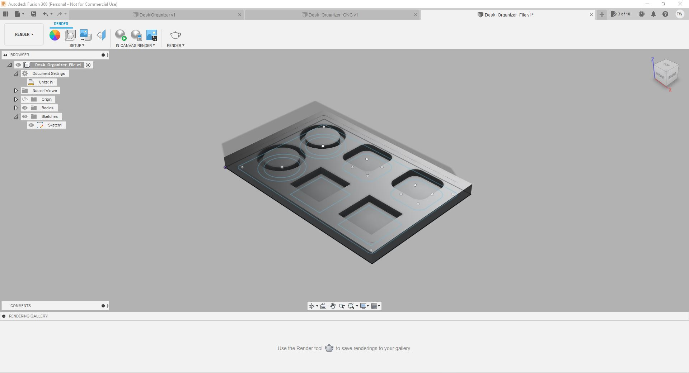

Week 5
This week was focused on designing a desk organizer using the shaper tool, carving a piece of wood, and engraving our initials!
1. Designing our desk organizer

First, opening Fusion360, we need to begin by creating a project file along with our master file where all of our information will be written on.
Now that we have our file all orginzed it is now time to begin making our sketch. First we need to press the "Create Sketch" button on the top left of the screen. From there we are greeted by this screen, we need to select the blue selected side. Once clicked we will change viewing angles.

This is the new view that we are given. From here we can do a number of things. We can create shapes, fillets, curves, etc. But first we need to create the outline of our organizer (Meaning the border) and we need to make sure that our measurements are in inches.

Selecting the solid rectangle tool we can begin by creating our border. Selecting the origin we can drag and select to a give point. From there were are prompted to choose the dimensions. For our purposes our dimensions will be 12.5 in Width and 8.50 in Height.
Now that we have our border we need to set our inner shape. Using the same tool we drag the shape from corner to corner leaving at least 0.25 between the edge and the inner shape.

Since we have our two inner and outer rectangles ourlineing our shape we need to fillet the corners of our inner rectangle. Choosing the fillet tool we can click on each corner of the inner rectangle which adds a curved edge. Since at first the curves are to dramatic we need to adjust them. Just as we did with the diameters we can do here. Click the grey text box we input 0.25in.
Because the instructions indicate that we need to have a circle with a diameter of 3inches we are going to start by including that first. Select the shape tool for circles and begin creating the circle. Again a grey tab will show up allowing you to directly input the dimeter you want. After you have inputed your diameter click the "Enter" Key and you are ready to move on.

Now that we have our required 3inch diameter circle we need to have another inner diameter circle in order to enure that we can separate the circle from the outer body. Just like the other tools we can prescribe a specific measurement using the grey box in inches. For our purposes we need to have a diameter of 2.25inch.
Moving on with my design I decided to copy and paste the above circle in order to have another place to fit a circular object for my desk, a cup, water bottle, or other items.
Now that I have an idea of what I want to add and utilize for my design I continue you add shapes and different configurations. As of now I have 2 circles and 4 squares. Later you will see how they came out. For my purposes I need to have these wide enough to fit the objects I want and for it to be designed properly for a pocket cut.

To add a little style I decided to add some fillets on the top two squares and It would allow me to use those pockets for different items or for a seperate organizer.

Now that I am done with my sketch It is time to solidify the sketch and move to render in order for us to get a better idea as to what final product would look like after stain and sand.

However, first, we need to create our bodies and make our depth with respect to our material. Selecting the outer boundry of the work area we can use our special tool to give it how tall we want it. For our purposes we need this body to be 0.75 inches in height. On the right after hitting the E key we can input these measurements and select the "New Body" option.

Dont be scared, this is normal. Since you created a new body we deselected our sketch. It isnt gone though.

Now that we have reselected our sketch we can start continuing with joining and creating our new bodies.

Moving onto the inner body we need to include this height to be 0.75 as well. Using the same method and options on the right-hand side we can input these options.

Since we have all the other bodies to be 0.75in we can now select all the inner depth pieces for our organizer and our items. For these pieces we need to have a depth of 0.25inch and since this is seperate from the body we need to use the join option on the right hnad side of the screen.

This is what this should look like. As you cna probably tell we still have inner diameter that is open. We will solve this in the next step.
Just like the other sections and bodies we need to select the inner diameter circle and input a depth of 0.75 and choose the "Join" option. Now that we are done creating the new bodies and setting the depth of our desk organizer we can move onto rendering in order to give us an idea of what our final product should look like!
Clicking the render tab we are transported to this page. Here we can choose what material we want this organizer to be along with applying different staining options to see what It wouldl look like if one were to go down that path.
Since we are not going to be keeping the outer body of the desk organizer we can go the bodies folder and deselect "Body 1". Now we will be able to see the final desk organizer.
2. "Hello World" and the First Error

After Brackets was successfully downloaded, I was able to upload my index file. Normally, after opening the index file, you would immediately commit and push to file to make sure that the GitHub website is updating correctly. However, as can be seen from the photo above, the options to commit and push are missing. As a test, I added my template from w3schools, but the issue remained, as seen below. From that point, a whole lot of testing was done, including uninstalling "Brackets Git" then reinstalling it, starting the project over within Brackets, and even uninstalling Brackets itself and reinstalling. None of this proved successful.

3. Fixing My First Error


After all that testing, I realized that I had gone "file -> open" instead of "file -> open folder" when starting this project in Brackets. This left Brackets to finding a single file, but not knowing where to put it or what to do with the information. After realizing this, I was able to start over following the correct protocol as seen above.
4. The First Push

After having fixed the earlier errors, I finally was able to commit and push the original template. A Success, finally!
5. Some Basic Changes

Within my limited skill set, I began to make changes to the template. Adding some filler photos of my own. Altering the names of important sections in the toolbar, and deleting unneeded section, while still being careful to only delete something when I was certain it was not going to be useful. It was at this time that the first draft of the "About Me" page came into being. With the help of w3schools, I was able to correctly proportion my photo and text, so that neither took up too much space on the page (they are one quarter and three-quarters of the page respectively).
I was beginning to come to the limit of my new found skillset, so I decided to commit and push for the night, and wait to get help the next day. Overall, while cosmetically my site now looked to be my own, the shell was decidedly still w3schools'. Still to this day, I have avoided adding my own code or when simply reusing their original code will suffice.
6. Second Push and a New Look

The second push was successful and a first look at my new website can be seen below. Even though a lot has changed, you can clearly see how I got from that first night to my final product.


7. Fixing Pictures
While I had come to what I thought was the end of my knowledge of HTML the night before, a quick discussion from Matt Goodwin gave me some ideas to move forward with. Among the places I had stalled the night before was an issue with images. I knew how to link images from a website, but not anywhere else. With some inspiration from Matt, I realized that I needed to make a new folder within my main folder. This new folder was labeled "images" and is easily substituted in place of any URL by typing "src="Images/file_name." The new file can be seen below.

8. New Pages - Weeks 1-15
My conversation with Matt was not only helpful for solving my picture problems, but it also helped me solve the last of my big hurdles. I did not yet know how to make new pages, one for each week, which would then be linked by "Weeks" dropdown menu.
Having seen several other people's Brackets pages, and now having talked with Matt, I had an idea what the end product should look like, with my index.html on the left and a list of weeks pages below. But it was only after I experimented with adding an images folder that I realized the easiest way to accomplish this. I went "File -> New" then after making a new page, I went "File -> Save As" and saved the new page to the "BESTDaltonAdams.github.io" folder. This process was repeated 15 times, one for each of the standard weeks in a full semester (though we will not have 15 weeks' worth of material in this class).


9. Connecting the Pages
Taking what I had learned when altering the template the first time, I was able to quickly trim down the template to leave only what I needed within each week's page. I then copied and pasted that new template to each page. It was at this point, however, that I realized that none of the pages were linked together. Linking each week in the homepage dropdown was easy, simply going through the process of linking a URL but instead linking that week's folder. This was also made easier by using the already pre-made buttons as part of the original template.
The bigger problem came when linking the buttons of each week's toolbar to the homepage, since those buttons link to specific sections of the homepage, which was now a completely separate page. Solving this required a google search, which yielded the below solution. By copying this, I was able to successfully finish all of my links for all of the pages.

10. Third Push
At this time, I had accomplished a lot on my own, but another day's work had come to an end. I still needed to finish some cosmetic problems on the homepage and work on my "Week 1," but that would have to wait. I pushed my most recent work and test to make sure all of my interlinkings worked and that my template alterations in Weeks 1-15 had not had any errors.


11. Final Cosmetics
At this point, my website was nearly done. The skeleton was fully finished, but it was time to finish the skin. I was able to finish some of these final touches by myself, such as replacing placeholder images with the final ones. I did have two problems that required help. The first was getting my "About Me" text to be left set. After talking with Madison, we realized it was a formatting issue with the container which was a base setting from the original template. After comparing to other left set containers within the template, I was able to resolve the issue. The second issue was adding text over the lower left of an image, which reqired Kevin's help. After attempting to write our own CSS code and failing, we instead altered some of the w3schools code from a button which was over an image. With Kevin's help, we were easily able to convert that to being text over an image instead of a button over an image.
The results of these final cosmetic changes can be seen below. My homepage is now complete, though sections of it will be updated every week (if I remember). Now onto the last step for this week...


12. Getting meta and and beyond
It is at this part of the process that I say goodbye to week one. In this last step I am making the very page that you are reading now (please play mind being music in your internal monologue). This has been quite simple since in reality it is only a couple of headers, some paragraphs, and some images.
Now we go beyond meta - After this Week 1 page is finished, a future me (oh, the infinite possibilities) will put all of this in Grammarly and make sure that no major grammatical errors remain in my final project. Then an even more distant future me will push the final product, the final product that you are reading now (wait, are we back to just meta, oh who cares, you get the point).
There are no pictures, just an email sending this URL and a happy conclusion to week one.